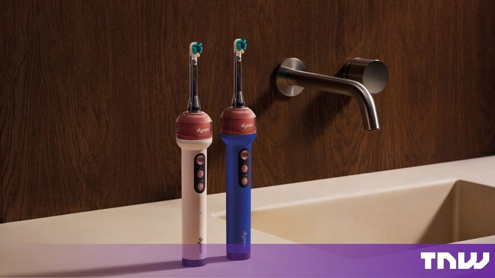

Good morning. Dyson spent 16 million lines of code, 470,000 dental images, and six years of engineering on the most improbable product of its history: a $499 toothbrush with a micro-camera inside it. The CameraJet watches your teeth 28 times a second, and the moment it spots a gap you usually skip, it fires a jet of mouthrinse straight into it. It is brushing, flossing and rinsing folded into one device and one very particular thesis: that the reason nine in ten people don't floss is that flossing is a chore — so Dyson designed it away. Whether that works is a question for your dentist. Whether it's the most Dyson thing the company has ever built? Not really a question at all.
What: The Dyson CameraJet — an electric toothbrush with a 100k-pixel macro camera that uses an AI system, Gap Optical Targeting, to detect gaps between teeth and aim a precision jet of mouthrinse at them while you brush.
When: Revealed by James Dyson in Paris on September 1, 2026; on sale immediately at $499 / £419.99 in two colourways (Ceramic Ultra Blue, Ceramic Pink).
Why it matters: AI's next frontier isn't the server room — it's the bathroom. The CameraJet is the loudest example yet of machine learning moving into everyday consumer hardware, complete with a camera-privacy debate and a razor-and-blades business model.
What actually happened
On September 1, at an event in Paris, Sir James Dyson unveiled the CameraJet: a three-in-one electric toothbrush, water flosser and mouthwash dispenser. It is the company's first electric toothbrush, priced at $499 (£419.99 in the UK, around €480 in Europe), with two colourways — Ceramic Ultra Blue and Ceramic Pink — available immediately on dyson.com and in Dyson Demo Stores.
The headline number, repeated in nearly every piece of coverage: nine out of ten people don't floss as often as they should, and the average person brushes for about 45 seconds instead of the recommended two minutes. Dyson's answer is to stop relying on you to remember either one. The CameraJet is a "complete dental system," in the company's phrasing — brush, floss and rinse collapse into a single two-minute act with a machine doing the aiming.
Why a camera, anyway
Smart toothbrushes existed well before Dyson showed up. Oral-B's iO range and Philips Sonicare have tracked brushing time, pressure and coverage through an app for years. What none of them could do was see — and the gaps between your teeth are where plaque forms first and hardens fastest. That is the gap Dyson claims to have closed.
The CameraJet's camera is a 1mm×1mm macro lens mounted right beneath the brush head, with an LED because, as James Dyson put it in the launch video, "it's inside your mouth, it's dark." It sits behind a dome-shaped lens engineered to shake off the slurry and water inside a working mouth. It captures 28 images every second, gated by a 257Hz strobe timed just out of phase with the vibrating brush head so the frames aren't motion blur. The machine-learning layer, Gap Optical Targeting™, was trained on 470,000 dental images collected during development, and it does one job better than any brush before it: telling a tooth from the gap beside it.
That low pixel count — 100,000, not millions — is deliberate. The system doesn't need to photograph your mouth; it needs to recognise a boundary. Fewer pixels means less compute, less heat, less battery, less latency. When the model spots a gap, it fires a conical burst of mouthrinse from an onboard 12.5ml tank within 100 milliseconds. The cone is wider and lower-pressure than the needle jets used by water flossers — Dyson's argument being that a needle punctures plaque while a cone lifts it, gentler on gums and enamel.
“Flossing is an awkward and time-consuming chore. We wanted to solve three fundamental problems: how to see those gaps, remove plaque, how to improve cleaning performance while brushing.”
— James Dyson, founder & chief engineer, on the CameraJet launchThe cascade: one camera, redesigned everything
The most instructive part of this product isn't the camera. It's everything the camera forced Dyson to change elsewhere — what one design writer called watching "one sensor reorganize everything around it."
- The toothpaste. Ordinary toothpaste foams, and foam is the enemy of a camera trying to look through a mouth. Dyson had to formulate its own non-foaming, SLS-free toothpaste, plus a clear, low-foaming mouthrinse, so the lens can actually see. (~£8.50 each in the UK.)
- The tank. A conventional straw-in-a-cup reservoir loses pressure the moment you tilt it — useless for reaching the back molars with your head angled. The CameraJet uses an anti-gravity tank with a diaphragm pump and pressure chamber so the jet fires whether the brush is upright, sideways, or flat against a back molar.
- The bristles. A dual-bristle head — firmer bristles in the middle for surface stains, softer ones around the outside for the gumline — on a contoured shape meant to hug a tooth rather than sit flat on it. The variable sonic oscillation adjusts angle mid-stroke so bristles don't stall in tight corners.
- The business model. The handle is the beginning, not the end: RFID-tagged brush heads (~$30 a pair) track their own usage and nudge you to replace them, while the toothpaste and mouthrinse become recurring purchases. Dyson sells the hardware above the premium tier and sells the consumables beneath it.
Even the camera's placement is a design answer: it and the jet live in the handle's inner assembly, not the disposable brush head, so replacement heads stay cheap while the expensive optics stay put.
The evidence — and where it's soft
The number Dyson leads with: the CameraJet removes up to 69% more plaque in hard-to-reach areas than leading premium electric toothbrushes. It sounds decisive. It deserves a careful read — that figure comes from Dyson's own laboratory testing, using a proxy plaque Dyson developed in a five-year collaboration with the dentistry faculty at the National University of Singapore. It is not yet an independent clinical trial showing people who use the CameraJet have better dental outcomes.
All figures as reported by Dyson and its press materials. The 69% plaque figure is company lab testing with a proxy plaque (Singapore collaboration), not an independent clinical trial — an important distinction flagged by multiple outlets.
Hands-on impressions from IFA Berlin and early reviews are more encouraging than the marketing cynic expects. Engadget called the live camera feed "surprisingly clear" given the movement, vibration and water; TechRadar, which reviewed it for a week, was broadly won over by the liquid-flossing experience and accuracy. Neither could vouch for the plaque claims, and both raised the price and the privacy questions — which brings us to the counter-reading.
The camera in your bathroom
The obvious, unavoidable issue: Dyson put a camera in a device you use in your bathroom, aimed at your mouth, connected to Wi-Fi and Bluetooth. The company's stated privacy position is unusually specific — the camera is active only during live viewing in the MyDyson app or when automatic jetting is scanning for gaps; Dyson says it does not record or store images, on the device or in the cloud; and the live feed streams to your phone, not to Dyson's servers.
But as The Next Web noted — and as the truth-in-advertising bar requires — those are Dyson's stated privacy practices, not claims that have been independently audited. That distinction matters more here than it would for an ordinary smart toothbrush, because the device is deliberately looking inside the user's mouth. A camera-privacy story this symmetrical was always going to generate equal parts "cool" and "absolutely not," and Dyson knows it: the marketing leans into the dentist's-eye view as the feature, not the bug.
The bigger shift: Dyson's 'intelligent machines'
The CameraJet is not an island. Two days after the Paris launch, at Dyson's Unveiled event in Berlin, Jake Dyson — chief engineer and the founder's son — stood on stage and announced a pivot bigger than a toothbrush: "We have shifted from purely mechanical devices to intelligent machines that can see, think, and respond." The 10 new products announced around that line included the R3 Nurovi robot vacuum (AI stain detection that distinguishes nearly 200 household substances), an air purifier, a floor washer and a hair dryer brush. Same vision system, different bodies.
“We're using artificial intelligence, vision systems, and machine learning to allow the machines to understand the environment they are operating in. The approach is the same, whether it's operating in your mouth, on your hair or around your home.”
— Jake Dyson, chief engineer, Dyson Unveiled, Berlin, Sep 3, 2026Look at the market Dyson is entering and the timing is less odd than it sounds. The AI-toothbrush category is projected to grow from $2.11 billion in 2025 to $4.09 billion by 2030 (roughly a 14% CAGR), with premium "AI coaching" features the fast-growing segment. Philips debuted its first on-device-AI toothbrush, the Sonicare DiamondClean 9900 Prestige, in July 2026. The category is maturing exactly the way Dyson likes them: people already have a routine, the market is consolidating around premium, and nobody has redesigned the physics. It's the same playbook the company ran in vacuums, hairdryers and fans — right down to the price premium, roughly $100 above the Philips Sonicare Prestige 9900 and Oral-B iO Series 10.
What to watch next
- Independent trials. The single most important test: an outside, peer-reviewed study with real plaque indices and real patients. Until then the 69% figure stays an internal claim.
- Clinical validation of GOT. Does a camera that aims at gaps actually reduce interdental plaque vs. a premium brush doing two minutes of manual work? Watch for University/industry trials using the Singapore proxy.
- Camera-adoption pattern. If consumers buy a $499 mouth-camera in meaningfully large numbers, expect Oral-B and Philips to answer with cameras of their own within a cycle — and expect the privacy debate to get louder when they do.
- The consumables orbit. Brush heads ~$30 a pair plus Dyson toothpaste and mouthrinse gives the $499 ticket a subscription tail. Margins here, not the hardware, may be the real product.
- Dyson's "intelligent machines" rollout. Nurovi robots and the rest of the Berlin lineup ship on the same vision-and-AI stack. The toothbrush is the proof-of-concept the whole household line now inherits.
The TIMPS verdict
Dyson is one camera away from remaking consumer AI. The CameraJet is a genuinely novel act of constraint-driven engineering: one sensor forced a new toothpaste chemistry, a new pump physics and a new bristle geometry. That cascade is the story, and it's rare and excellent.
Caveat the miracle claims. The 69% plaque figure is Dyson's own lab data against a company-designed proxy. It's a marketing number until an independent trial confirms it. Same for the "no images ever stored" privacy line — it's a promise, not an audit.
Read the price as intent. $499 is a statement that Dyson believes the bathroom is the next battlefront for premium tech — and that consumers will pay Apple-tier money for a better mouth. The consumables are where the margin lives.
The whole story in one line: the company that made the dirt in your carpet visible just did the same for the plaque between your teeth — and asked $499 for the privilege of showing it to you.
Facts in this piece were compiled from Dyson's official CameraJet announcement and press materials (dyson.com and PR Newswire, September 1, 2026), the Dyson "Unveiled" intelligent-machines release (September 3, 2026), The Guardian, WIRED, The Next Web, Engadget, Vice/Motherboard, CNBC TV18, TechRadar, Irish Times and Yanko Design coverage from the September 1–6, 2026 launch window. Performance claims — including the 69% plaque-removal figure — are Dyson's own laboratory testing unless otherwise noted; market figures are as cited in industry research reports. This is news analysis by an independent publication — not medical advice, not investment advice, and not AI advice.
Sources
- PR Newswire — Dyson CameraJet official launch release (Sep 1, 2026)
- Dyson — Introducing CameraJet: product announcement & specs
- The Guardian — Dyson launches £420 toothbrush that films 'live cleaning footage' (Sep 1, 2026)
- WIRED — Dyson's Next Act Is an Electric Toothbrush With a Camera (Sep 1, 2026)
- The Next Web — Dyson has built a toothbrush with a camera in it, for $499 (Sep 1, 2026)
- Engadget — Dyson's CameraJet is a $500 three-in-one toothbrush that scans your maw (Sep 1, 2026)
- Vice / Motherboard — This $499 Dyson Toothbrush Uses AI to Find the Spots You Miss. Does It Work? (Sep 3, 2026)
- CNBC TV18 — Dyson debuts $499 camera-equipped toothbrush with AI-powered flossing (Sep 2, 2026)
- TechRadar — Dyson CameraJet review: a week with the liquid-flossing toothbrush (Sep 1, 2026)
- PR Newswire — Jake Dyson unveils "a new era of intelligent machines" (Berlin, Sep 3, 2026)
- Yanko Design — So advanced they redesigned the toothpaste for it (Sep 1, 2026)
- Irish Times — Wi-Fi, cameras and machine learning: Dyson takes aim at dental care (Sep 1, 2026)
One story a day,
explained properly.
New TIMPS deep dives land regularly — paired with the five-signal PostCard every morning. Free forever.